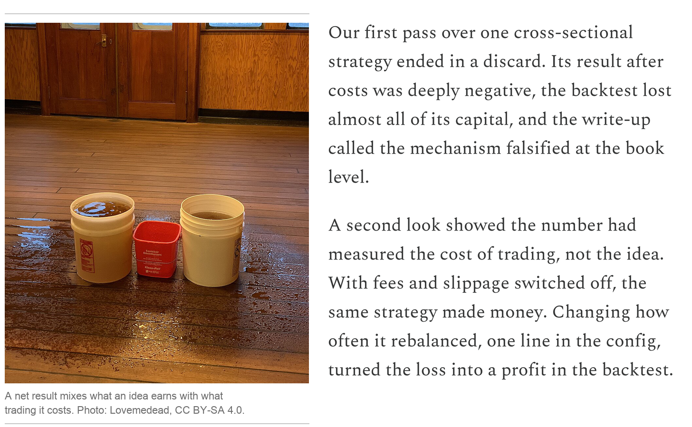
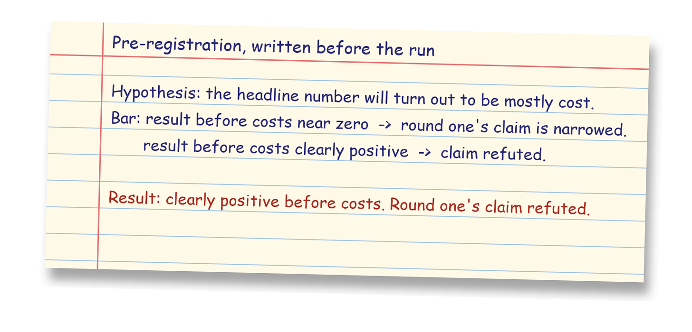
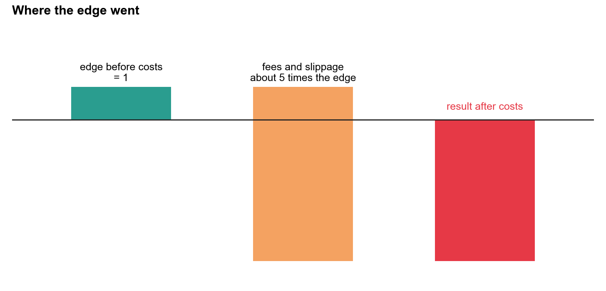
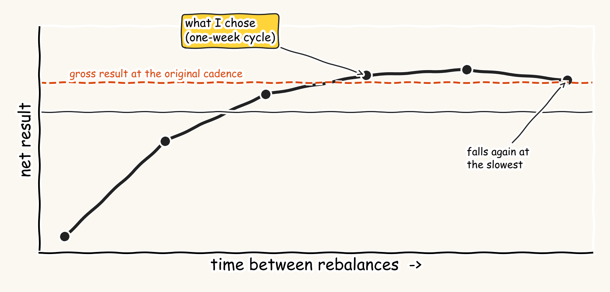

We discarded it for losing money. The fees did that.
This is the third and last post in Rookie Mistakes, the series on mistakes we made early in our alpha research. The first covered a backtest that could see the future, the second a data feed that froze without an error. This one is about judging a strategy by a single number.
The number was the result after costs, and it was real. It was also two things added together that I should have looked at separately: what the idea earns and what trading it costs.

I call this the leaky bucket problem: a net result mixes what the idea poured in with what leaked out, and I had only read the total.
The verdict I wrote
Round one measured the effect the strategy trades on, carefully, and found it small: about 0.06 standard deviations, an estimate with its own error. The write-up concluded it barely existed. The measurement was right and the conclusion wasn't. A small effect can still matter when it is traded across 49 coins and about a thousand rebalances a year. That holds only if those bets are close to independent, and they rarely are, because coins move together and overlapping holds repeat the same bet. Round one never asked how much a small effect adds up to at the portfolio level, and the pre-cost result of the real portfolio was the way to find out.
It also read the net result as evidence about prediction. That needed a second check that round one skipped, which was to split the result into what the signal earned before costs and what trading it cost.
The prediction I wrote down first
Round two started from the decomposition, and I wrote the hypothesis down before running anything: the headline number would turn out to be mostly cost. I also wrote the bar. If the pre-cost result came back near zero, round one's claim would be narrowed. If it came back clearly positive, the claim was refuted.

The pre-registered hypothesis, the bar and the result.
It came back clearly positive. That is evidence of raw return in this implementation, not proof that it can be traded at a profit. A back-of-envelope check agrees with the cost story. The strategy turned over its book about 676 times a year, at roughly 0.11% per round trip, fees and slippage together. That is about 74% of capital a year in fees, against 17.1% annual volatility. Divided out, that is 4.35 units of Sharpe lost to cost, and the simulation measured 4.357. The two agree to two tenths of a percent. The division works because gross and net share one annualisation and one volatility in the denominator, which is the case here.

The edge before costs, the fees, and the result after costs.
A gap that wasn't drift
My re-run disagreed with round one's report by about 5%, more than my threshold for suspecting that data or the engine had drifted. Return and drawdown matched to the digit, so the profit-and-loss series was identical. The whole gap was a volatility convention. The report annualises 15-minute bars. My runner resamples to daily, and when a strategy trades several times a day, its intraday returns can offset each other, which makes daily volatility lower. In this sample the ratio of the two volatilities was 1.051, and so was the ratio of the two Sharpe ratios.
I kept one convention inside every comparison and flagged the cross-round number, so nobody would read the gap as a bug.
One line in the config
I then slowed the rebalancing down in steps. The result rose from deeply negative, through zero, to a peak, and fell again at the slowest setting. At the cadence I chose, the net result beat the original cadence's gross result. The change was one line: the rebalancing interval. I tried eight intervals. The best was two weeks, but I kept one week, the length of the weekly cycle the signal trades, because it rebalances twice as often. That choice cost about 0.16 of Sharpe. I chose after seeing all eight, so the result is a search result, not a forecast. The prediction I wrote down covered the cost story, not the choice of cadence, and I have not yet tested that cadence on a window it was not picked on.
The question was whether that was a real holding horizon or just trading less. Two slower settings with almost the same turnover differed by far more than their cost difference could explain, and the result fell at the slowest setting. That is consistent with a holding horizon. I have not ruled out differences in rebalance timing, exposure or volatility between those settings, so I read it as consistent with a horizon, not as proof of one.

Net result as the time between rebalances grows.
Where my own predictions failed
I had predicted that the edge sat in one of the strategy's two components and that the other was flat. I wrote down the opposite of what happened. The component I called flat held nearly all of the gross edge, and the one I backed held very little. Pre-registering made that visible, because I had a written prediction to be wrong against.
I also tried the obvious follow-up: keep only the winning component at the new cadence. It lost to the blend by a wide margin. An attribution measured at one cadence did not transfer to another.
What we do now
Every discard verdict carries the split between pre-cost and post-cost result next to the net number, and a gate: when cost is large relative to gross, the net number is dominated by friction, so decompose first. A small effect is tested at the portfolio level, before costs, before anyone calls it nothing. The hypothesis and its bar are written down before the run. A comparison uses one volatility convention.
The runs themselves needed a guard too. A modified module wasn't picked up because an older copy was already installed, so a comparison would have re-measured the parent and printed a clean, wrong "no difference". Each arm now starts from a clean install.
Other strategies that round one discarded, with fast rebalancing and no volatility rescaling, are on the re-check list.